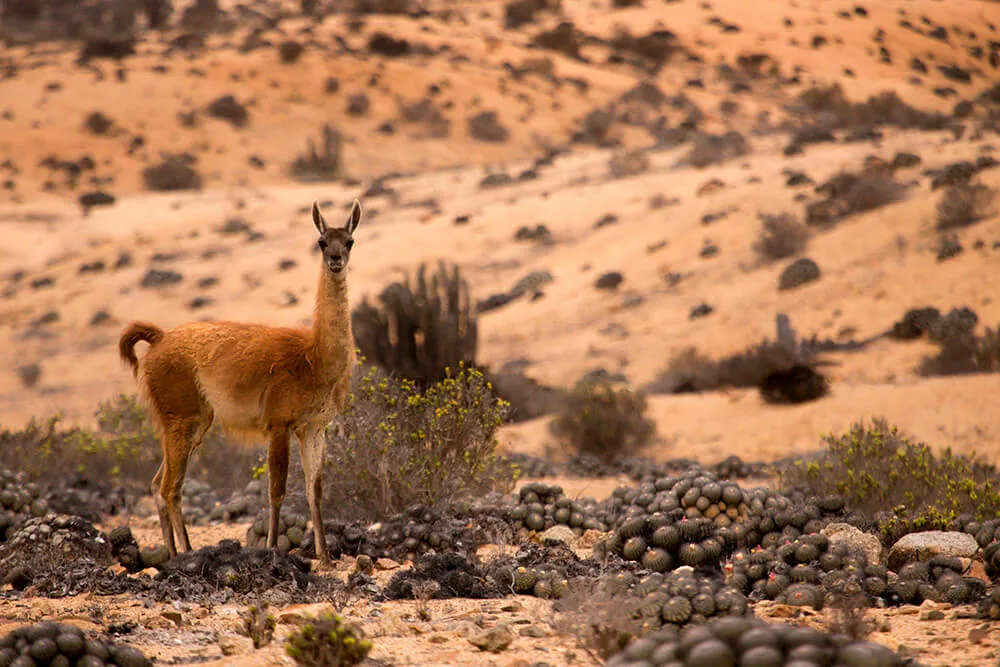

|
jkh
Фенеки
Гуанако
|
Гуанако
Гуанако - род верблюдов, тесно связанный с ламами. Обитают эти животные практически только в пустыне Атакама, в других
местах они редко выживают, ведь те столетия, проведенные именно в этих местах необратимо изменили их организм. В отличии от фенеков, гуанако, не являясь
хищниками, почти всегда перемещаются довольно-таки большими группами до 20 особей. Питаются они в основном кактусами (в пустынях не такое уж большое разнообразие растениий)
и жидкость выделяют из них же. Гуанако также является самым большим млекопитающим, среди обитающих в этих местах, их рост составляет ~1,5м. в высоту. С перепадами температур
гуанако справляются с помошью толстой кожи, которая и в холодное и в жаркое время суток сохраняет их собственную температуру тела.

назад
|